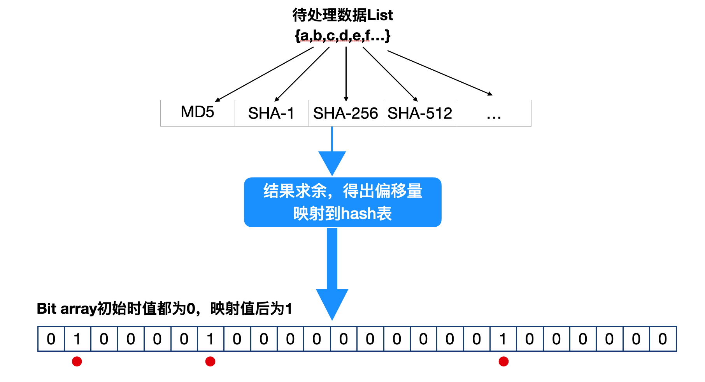
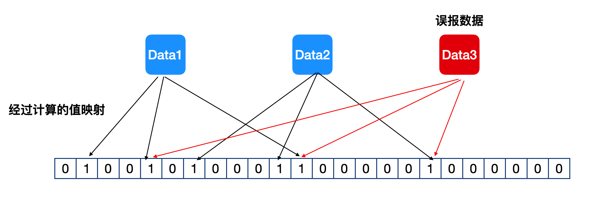

布隆过滤器原理
导语：在项目中使用过布隆过滤，非常强大，效率出奇的高，而且不怎么占用内存。在此记录下布隆过滤器原理。
介绍
Bloom Filter是1970年由Bloom提出的。它实际上是一个很长的二进制向量和一系列随机映射函数（Hash函数）。布隆过滤器可以用于检索一个元素是否在一个集合中。它的优点是空间效率和查询时间都远远超过一般的算法，缺点是有一定的误识别率和删除困难。Bloom Filter广泛的应用于各种需要查询的场合中，如Orocle的数据库，Google的BitTable也用了此技术。
摘自http://www.sigma.me/2011/09/13/hash-and-bloom-filter.html
原理

看着上面的图，按流程描述下原理。
- 准备一个足够大的bit array表；
- 将待处理数据List中的数据分别经过多个hash算法计算出hash值，并求余；
- 将求余的多个值映射到bit array表，在多个余值的位上，由0置1。
如果计算出的多个位上已经是1，则数据已存在，过滤掉，如果有一个或多个是0，则是新数据，保存bit位。
误报的情况: 当不同的数据计算出的bit位与后计算出来的bit位重合，会出现误报。

降低误报的方法:
- 将bit array的size设置的够大
- 使用更多的hash算法，但使用太多的hash算法也会降低效率，也可使用单个hash算法，通过按规则修改数据，得出不同的值来实现也可。
优点
- 效率高
- 不存在漏报
- 空间占用低
- 安全
缺点
- 删除困难
- 一定的误识别率
Guava BloomFilter
使用方法
- 创建BloomFilter
1 | BloomFilter<String> bf = |
- 填入数据
1 | bf.put(Integer.toString(i)); |
- 判断是否包含
1 | bf.mightContain(Integer.toString(i)) |
源码计算bit array 大小
- p为误报概率 0-1之间
- n为正数，过滤数据预期大小
1 | static long optimalNumOfBits(long n, double p) { |
源码计算hash数量
- m为bit array 大小
- n为正数，过滤数据预期大小
1 | static int optimalNumOfHashFunctions(long n, long m) { |
按规则处理数据提高效率
Guava BloomFilter提供了两种策略MURMUR128_MITZ_32和MURMUR128_MITZ_64。
MURMUR128_MITZ_32是将生成的hash使用乘法规则生成bits
1
2
3
4
5
6
7
8
9
10
11
12int hash1 = (int) hash64;
int hash2 = (int) (hash64 >>> 32);
boolean bitsChanged = false;
for (int i = 1; i <= numHashFunctions; i++) {
int combinedHash = hash1 + (i * hash2); //乘法规则
// Flip all the bits if it's negative (guaranteed positive number)
if (combinedHash < 0) {
combinedHash = ~combinedHash;
}
bitsChanged |= bits.set(combinedHash % bitSize);
}MURMUR128_MITZ_64是将生成的hash使用加法规则生成bits
1
2
3
4
5
6
7
8
9
10long hash1 = lowerEight(bytes);
long hash2 = upperEight(bytes);
boolean bitsChanged = false;
long combinedHash = hash1;
for (int i = 0; i < numHashFunctions; i++) {
// Make the combined hash positive and indexable
bitsChanged |= bits.set((combinedHash & Long.MAX_VALUE) % bitSize);
combinedHash += hash2;//加法规则
}
本文标题：布隆过滤器原理
文章作者：bellpost
发布时间：2020-07-22
最后更新：2020-07-23
原始链接：https://bellpost@github.io/2020/07/22/bloom-filter/
版权声明：本博客所有文章除特别声明外，均采用 CC BY-NC-SA 3.0 CN 许可协议。转载请注明出处！